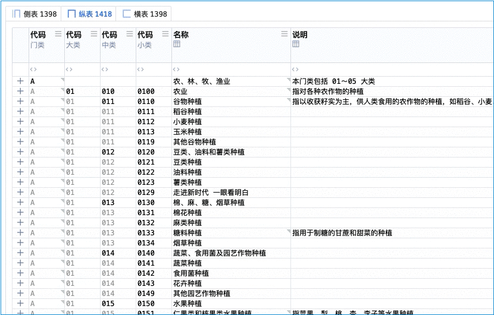
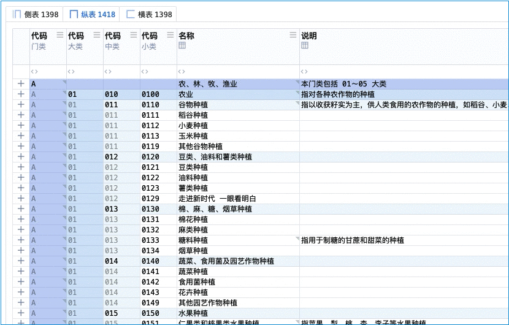

飞针宝典
简称：飞针
诗
《飞针宝典》
翩若惊鸿神女样，绣花彩典飞针长。
日月重光上颜色，山河秀丽凤求凰。
飞针清明

飞针惊艳

银针黯然
待补图
望穿秋水
待补图
黯然灭绝
待补图
弹指神通
待补图
现实世界
认证机构信息管理系统 中的 「上色」
武侠世界
天下第一神功
五绝：西花 · 花蕊夫人 的 成名绝技
凭借美色，先嫁蜀主孟昶，做贵妃，得万亩花园，后嫁宋太祖赵匡胤，还是贵妃，又得万亩花园
凭借对花蕊的观察悟出的飞针神功，写成秘籍《飞针宝典》。寻常人，没有万亩花园，故而有言：
欲练此功，必先进宫
意思是：嫁凡夫俗子，没万亩花园。没有足够花蕊，没法参悟神功，所以：进宫嫁皇上、就有了
皇上赏赐的万亩花园，名为西花城，所以得名 「西花 · 花蕊夫人」 西花城一大半种的都是葵花
虽嫁给赵匡胤，却与其部下神无极有私情。神无极凭此便利偷抄一份，放在密室、暗自学习
后被穿越主（审核员东方正美）意外得到，穿越主骨骼清奇天赋异禀，练武奇才、很快学会
自学到什么程度
只需要知道这种上色的表，比以前的、没颜色的那种，好太多，就行了
至于你需要按哪个快捷键，实际用的时候再琢磨、再实际的按，轻松会
术语对照
| 武学术语 | 系统术语 | 说明 |
|---|---|---|
| 飞针 | 上色 | 相当于电视中的彩电 |
| 飞针清明 | 层次 | 层次分明 |
| 飞针惊艳 | 格彩 | 单元格之彩 |
| 银针黯然 | 次要黯然 | 单元格之黯（弱化次要、突出重点） |
| 望穿秋水 | 看清黯然 | 银针黯然的辅助功能 |
| 黯然灭绝 | 去除次要 | 银针黯然的辅助功能 |
| 弹指神通 | 未变改黯然 | 未变改之黯（万般变幻、心中有数） |
作者笔记
武侠角色附身，会用飞针：
飞针清明（层次分明）
随便打出两针、探探路数...
飞针惊艳（单元格之彩）
蓄力打出飞针、普通攻击...
银针黯然（单元格之黯）
打出带毒银针、要人性命...
望穿秋水（双重辅助）
通过飞针打开东西、想要看清前方事物...
弹指神通（未变改之黯）
通过弹指射出飞针、弹指之间即得神通...
| 招式 | 首拼音首字母 | 快捷键（神意夺心爪） |
|---|---|---|
| 飞针清明 | 飞针的飞 Fēi F | Control + Shift + F 、 Command + Shift + F |
| 飞针惊艳 | 飞针的针 Zhēn Z | Control + Z 、 Command + Z |
| 银针黯然 | 银针的针 Zhēn Z | Control + Shift + Z 、 Command + Shift + Z |
| 望穿秋水 | Control + Shift + A 、 Command + Shift + A | |
| 弹指神通 | 神通的神 Shén S | Control + S 、 Command + S |